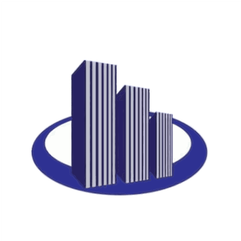
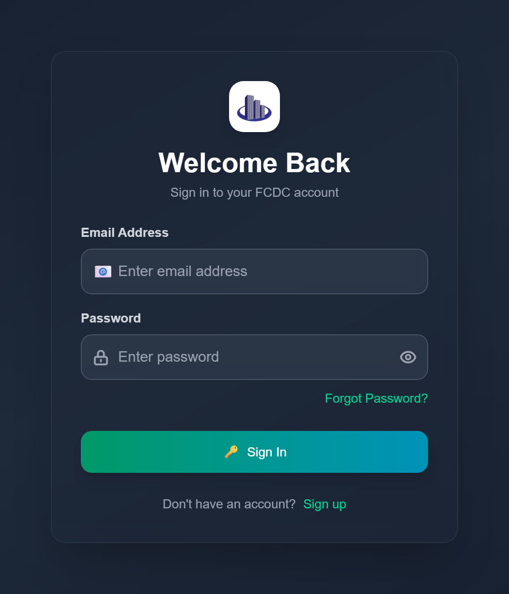
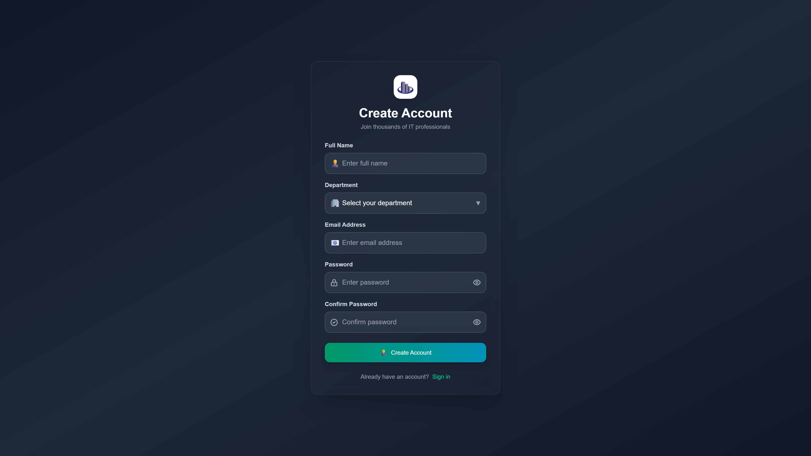
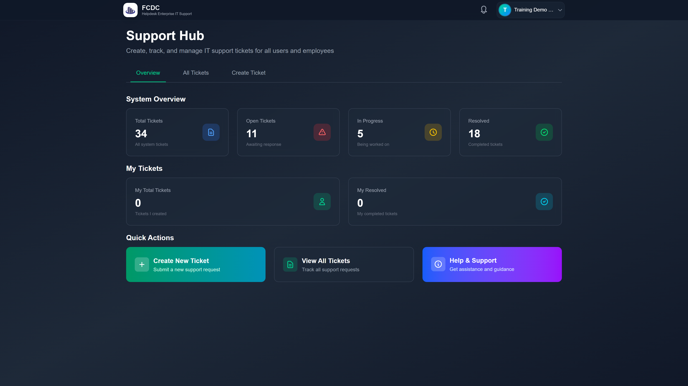
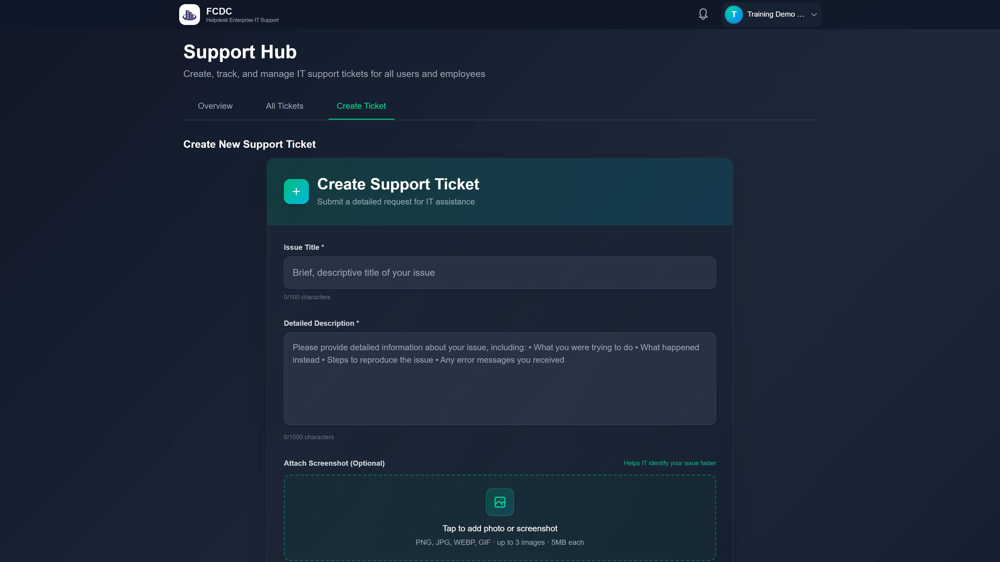
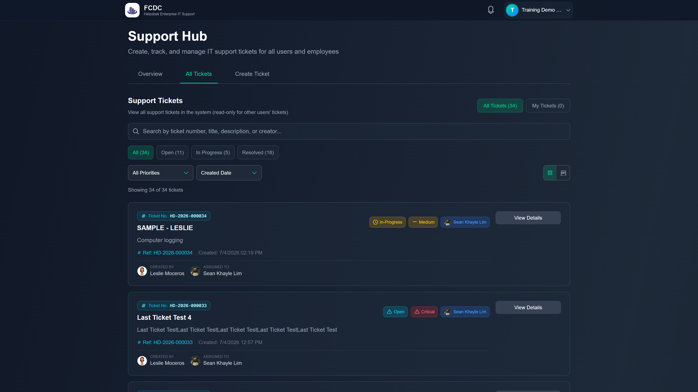

IT Department — Employee Training
FPDC Helpdesk
Ticketing System
Paano Gamitin ang Bagong IT Support Platform
helpdeskticketingsystem.vercel.app
P · Start | → / Space · Next | ← · Previous | F · Fullscreen | Esc · Exit

Paano Gamitin ang Bagong IT Support Platform
Sa pagtatapos ng seminar, dapat kayong makakapag:
Hardware, software, network, email, security — lahat sa isang platform.
Hal. Ticket #42 — may official record ang bawat request.
Alamin kung Open, In Progress, o Resolved na ang ticket.
Mag-message sa IT team sa loob ng ticket — hindi sa personal chat.
Automatic updates kapag may bagong message o status change.
Mag-rate at mag-suggest pagkatapos ma-resolve ang issue.
Automatic routing sa tamang IT staff. Hindi na kayo maghahanap kung sino ang available.
Alam ninyo ang status: Open → In Progress → Resolved → Closed.
Hindi na "nawawala" ang request. Pwede ninyong i-check ang history anytime.
Notification bell kapag may progress sa ticket ninyo.
Feedback form pagkatapos ma-resolve — makakatulong sa IT na mag-improve.
Company account, encrypted login, role-based access.
| Role | Sino | Capabilities |
|---|---|---|
| User | Ordinaryong employee (KAYO) | Create ticket, track tickets, message IT, submit feedback |
| Admin | IT Staff | Assign tickets, update status, manage users |
| Manager | Management | View analytics, reports, feedback trends |
Focus ng seminar: User role — paano mag-report at mag-track ng IT issues


Pagkatapos mag-login: Overview · Create Ticket · My Tickets

Live site — User Dashboard (Overview tab)
Punan ang title, description, category, priority — tapos i-click ang Submit.
📎 Attach Screenshot (Optional) — pwede mag-attach ng photo o screenshot ng error sa ticket. PNG, JPG, WEBP, GIF · hanggang 3 images · 5MB bawat isa. Mas mabilis matulungan ng IT kapag may larawan!

Live site — Create Ticket · pansinin ang Attach Screenshot sa baba ng form
💡 Pro tip: Mag-attach ng screenshot ng error — i-tap ang Attach Screenshot area sa Create Ticket form
Buksan ang My Tickets tab — makikita ang ticket number, status, priority, at assigned IT staff.

✅ Sumagot sa loob ng ticket — hindi sa Viber
✅ Be specific sa follow-up replies
✅ Mag-attach ng screenshot kung visual ang issue
• Bagong message sa ticket
• Status change (Open → In Progress)
• Ticket assigned to IT staff
• Ticket resolved — time for feedback!
1. Rate ang service: 1–5 stars
2. Optional suggestions para sa IT
3. Submit — one feedback per ticket
Nakakatulong sa IT na mag-improve!
| May problema sa... | Category | Example |
|---|---|---|
| Computer, printer, monitor | Hardware | "Monitor flickering" |
| Application, program crash | Software | "Excel keeps crashing" |
| WiFi, internet down | Network | "No internet on 3rd floor" |
| Outlook, email | "Cannot receive emails" | |
| Password, suspicious email | Security | "Received phishing email" |
| Hindi sure | Other | "Need help with new system" |
Ang printer sa department ay hindi nagpi-print since this morning. May error na "Paper Jam" pero walang stuck paper.
Pwede ba mag-ticket para sa colleague?
Better na sila mismo ang mag-ticket.
Gaano katagal bago ma-resolve?
Depende sa priority — Critical = ASAP.
Nakalimutan ang password?
Use Forgot Password sa login page.
FPDC Helpdesk Ticketing System
IT Department · [Email] · [Phone] · [Office Location]